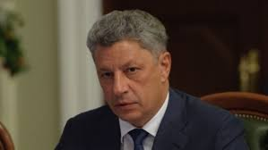

Кандидат у Президенти України Юрій Бойко

підтримка : 11.67%
Ю́рій Анато́лійович Бо́йко (нар. 9 жовтня 1958, Горлівка) —
український державний діяч, політик. Народний депутат України VIII скликання з 27 листопада 2014 року.
Герой України (2004).Міністр енергетики та вугільної промисловості України з 9 грудня 2010 року
(з 11 березня 2010 і до реорганізації міністерства — Міністр палива та енергетики України) по 24 грудня 2012 року.